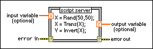

MATLAB script
Owning Palette: Script Nodes
Requires: Full Development System (Windows)
Calls the MATLAB® software to execute scripts. You must have a licensed copy of the MATLAB software version 6.5 or later installed on your computer to use MATLAB script nodes because the script nodes invoke the MATLAB software script server to execute scripts written in the MATLAB language syntax. Because LabVIEW uses ActiveX technology to implement MATLAB script nodes, they are available only on Windows.

 Add to the block diagram Add to the block diagram |
 Find on the palette Find on the palette |
Add this node to the block diagram and enter the script. You also can right-click the node border to import text into the node. Right-click the node border to add input and output terminals. Right-click a terminal to set its data type. When you create a script in the MATLAB script node, you must use supported data types.
Examples
Refer to the following VIs for examples of using the MATLAB script:
- MATLAB script node - Lorenz Diff Eq VI: labview\examples\Mathematics\Scripts and Formulas
 Open example Find related examples
Open example Find related examples - MATLAB script node - Fractal VI: labview\examples\Mathematics\Scripts and Formulas Open example Find related examples